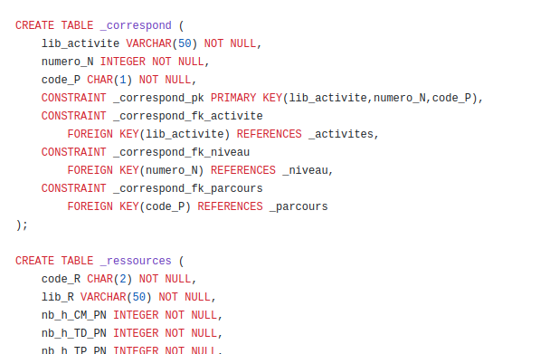

Diagramme UML
Création d'un diagramme UML basé sur un sujet qui correspondait à la formation de BUT informatique
Script SQL
Grâce au diagramme UML, nous avons pu réaliser une partie de la base de données en SQL, développée avec l'application SQLworkbench
